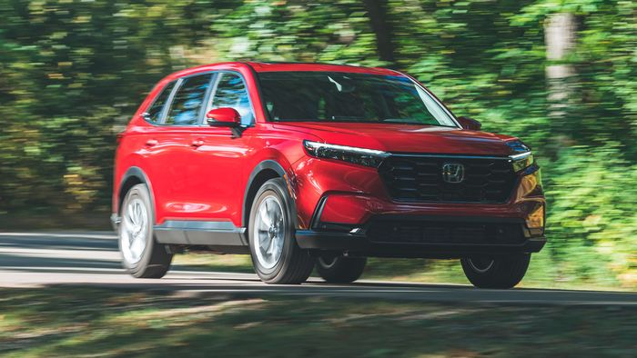

2025 Honda CR-V
starting at ₹26,25,353.22

block
Overview
Compact crossovers such as the 2025 Honda CR-V are in high demand, as they offer comfortable seating, decent fuel efficiency, and an easy-to-park profile. Honda's cheerful entry in this competitive SUV segment earns its place at the top of our list because it also offers agile handling to accompany its practicality. Equipped with front- or all-wheel drive and a 190-hp turbocharged engine, the nonhybrid CR-V is reasonably powered; we review the 204-hp hybrid version separately. While the Mazda CX-50 offers more luxury and the Ford Bronco Sport is more capable off-road, the CR-V is a better all-arounder for its pleasant driving dynamics, solid build quality, and just-right balance of infotainment knobs and screens. For these reasons and more, we named the CR-V to our 10Best Trucks and SUVs list for 2024, and we gave it a 2024 Editors' Choice award. It won't be a surprise if this vehicle earns a place once again.
What's New for 2025?
There are no changes to the Honda CR-V for 2025, and in this case, no news is good news.
Pricing and Which One to Buy
The price of the 2025 Honda CR-V starts at $31,450 and goes up to $36,350 depending on the trim and options.

The CR-V LX, EX, and EX-L are all gas-only models. The Sport, Sport-L, and Sport Touring models come exclusively with the hybrid powertrain, and these are what we'd recommend most. Of the nonhybrid models, we'd choose the EX-L for its generous list of equipment. It comes with leather upholstery, a power tailgate, and a larger touchscreen, among other features.
Towing and Payload Capacity
The Honda CR-V can tow up to 1500 pounds when equipped with optional towing accessories.
Fuel Economy and Real-World MPG
The CR-V's nonhybrid powertrain provides competitive fuel economy. The front-wheel-drive CR-V with the turbocharged 1.5-liter four-cylinder gets EPA estimates of 28 mpg city and 34 mpg highway, and opting for all-wheel drive drops those numbers a bit. On our real-world 75-mph highway fuel economy route, an all-wheel-drive EX-L registered 31 mpg. For more information about the CR-V's fuel economy, visit the EPA's website.
Interior, Comfort, and Cargo
The CR-V's handsome interior design is highlighted by a honeycomb-textured insert spanning most of the dash, discreetly hiding the air vents. The steering wheel frames a partially digital gauge cluster with an analog speedometer and a 7.0-inch display that allows the driver to swap between different informational menus. Honda says the front seats are designed to decrease driver fatigue on long trips and that the new CR-V's driving position has been improved. Between the front-seat passengers is a large center console bin, and behind them are reclining back seats with an extra 0.6 inch of rear legroom compared with the outgoing CR-V. There are 39 cubic feet of cargo space behind the second row with the adjustable load floor in its lowest position.
Safety and Driver-Assistance Features
Honda equips every CR-V with a boatload of standard driver-assistance technology. Along with automated emergency braking, the compact SUV comes with a driver-attention monitor, lane-keeping assist, and a back-seat reminder. For more information about the CR-V's crash-test results, visit the National Highway Traffic Safety Administration (NHTSA) and Insurance Institute for Highway Safety (IIHS) websites. Key safety features include:
Standard forward-collision warning and automated emergency braking
Standard lane-keeping assist and lane-departure warning
Standard adaptive cruise control
Warranty and Maintenance Coverage
There's nothing particularly special about the CR-V's limited and powertrain warranties. Both include coverage periods comparable with most competitors. However, Honda started offering complimentary scheduled maintenance on 2024 CR-V models.
Limited warranty covers three years or 36,000 miles
Powertrain warranty covers five years or 60,000 miles
Complimentary scheduled maintenance for two years or 24,000 miles